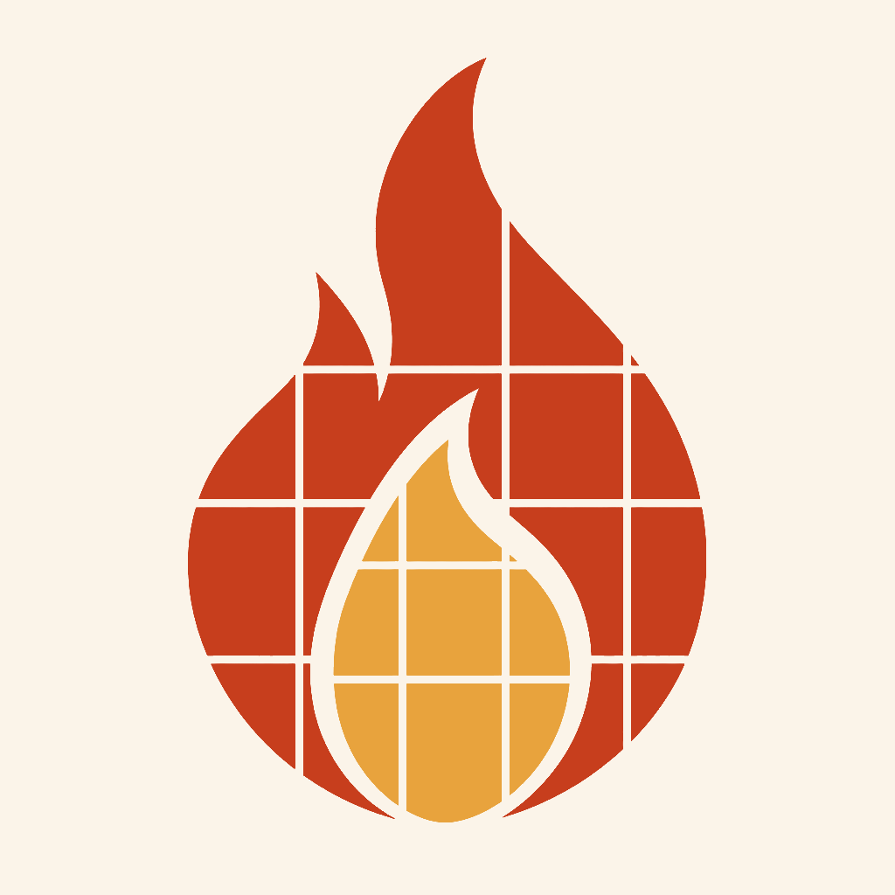

TEACHER TACOS ／ 技術ノート
先生ひとりに、データベースひとつ。
スプレッドシートをコピーして、デプロイして、URLを配る。
それだけで、担任ごとの学習記録データベースが立ち上がる。
G A S f l a r e
＝ GAS ＋ Cloudflare
問題 01
学習アプリを配っただけでは、
授業になりません。
アプリを作って、使ってくださいと言って配る。それで終われるなら苦労はありません。
授業で使うとなると、必ずこう聞かれます。「で、誰がどこまでやったんですか」
やった人とやっていない人が同じ扱いになるなら、生徒は次からやりません。宿題にも、評価にも、声かけにも使えない。
問題 02
かといって、サーバは背負えない。
記録を取ろうとすると
- サーバを立てる
- データベースを設計する
- 生徒のアカウントを発行する
- 卒業のたびに整理する
- 個人情報の管理責任を負う
GASは、なぜ惜しいのか
Google Apps Script は、
学校にとって奇跡的に都合がいい。
- 教員個人の権限のまま、生徒の情報を集められる申請も、サーバの調達も、承認待ちもいらない。自分のドライブでボタンを押すだけ。
- データが完全に、その先生のものになる誰かのサーバに預けるのではない。消すのも、渡すのも、持ち出すのも自由。
- 学校が発行したアカウントで、ちょうど必要なぶんだけ本人が分かる厳密に個人を特定しにいく仕組みではないし、私的な情報が混ざり込むわけでもない。
それでも
GASだけで全部を作ると、二つの壁に当たる。
壁 1 ／ 配ったコードは、もう直せない
- GASで配る＝先生ごとにコードのコピーを配る
- バグが出ても、こちらから直せない
- 新しいのをまた配って、コピーし直してもらうしかない
- → 変わらない、単純なものしか作れない
壁 2 ／ リッチにすると、重くなる
- 画像はセルに Base64 で埋め込めば扱える
- が、数が増えると苦しい。動作も鈍る
- 音声となれば、なおさら
- → 画像と音声の置き場所として、向いていない
気づいたこと
強みと弱みが、きれいに分かれている。
生徒の側から見ると
学校のアカウントさえあれば、
どの端末からでも続きから。
教室のChromebookでも、家のタブレットでも、同じ場所から再開します。アカウントが本人を指し、URLが先生を指している。それだけでいい。
答え
データベースは、
先生が自分のドライブに持てばいい。
- スプレッドシートをコピーするファイル → コピーを作成。これで自分専用のデータベースができる。
- デプロイする拡張機能 → Apps Script → デプロイ。新しいURLが発行される。
- URLを配るデプロイで出てきたURLを、そのまま。Classroom でも、QRコードでも、黒板に書いてもいい。
全体像
アプリは1つ。データベースは、先生の数だけ。
入場
「学校のアカウントだけ」は、
どこにも書いていない。
トークン
改ざんできない名札を渡す。
記録
クッキーの効かない場所で、
どうやって名乗るか。
時間
いつシートに書かれるか。
落ちたら、どうなるか。
壊してはいけない一線
GASが落ちていても、
ゲームは絶対に止まらない。
進捗の正本は、あくまで端末の localStorage にあります。クラウドはその写しにすぎません。通信は全部 catch して黙って捨てる。生徒から見た違いは、右上に「☁️ 記録中」のバッジが出るかどうかだけです。
攻撃
URLを知られたら、何ができてしまうのか。
| やろうとすること | 結果 | なぜ |
|---|
| 他人になりすまして書き込む | 不可 | 署名が合わなくなる。鍵は先生のGASの中だけ |
| トークン無しで書き込む | 不可 | bad_token を返し、何も書かずに捨てる |
| 他人の進捗を読む | 不可 | 読み出しにも署名トークンが要る |
| 別の先生のトークンで書き込む | 不可 | 鍵が違う。送り先も別を指している |
| 他ドメインの人が入場する | 不可 | メールが取れず、トークンが発行されない |
| 生徒のトークンそのものを盗む | なりすませる | セッションクッキーを盗むのと同じ危険度。だからURLバーからは即座に消し、期限を切っている |
記録の範囲
記録に残るのは、
先生のURLから入った分だけ。
防いだこと
- 端末に元からあった進捗は、アカウントに合流しない
- 進捗には「持ち主」を刻んである
- 友人の端末を借りてログインしても、友人の成果は混ざらない
防げないこと
- 本人が開発者ツールで端末の記録を書き換える
- アカウントを貸して、代わりにやってもらう
だから、この記録をそのまま成績にはしない。取り組みを見るための道具として使う。
個人情報
メールは、先生のシートの外へ出ない。
アプリが持っているのは stu_9f2c1ab77e40 という不透明IDだけです。それが誰なのかを知る手立ては、アプリ側には存在しません。メールとIDの対応表は、先生のスプレッドシートの中にしかない。
先生には見える。アプリには見えない。 それが正しい形だと考えています。
結び
足りなかったのは、
一本の線だけだった。
スプレッドシートは、先生がすでに持っています。デプロイのボタンも、Google がすでに用意しています。
足りなかったのは、「そのURLを踏んだ人だけを、そのシートに繋ぐ」という一本の線だけでした。
先生は、URLを配る。生徒は、それを踏む。それだけで、担任ごとの独立したデータベースが立ち上がります。
引き継ぎも、卒業も、異動も、シートをコピーするか捨てるかで済みます。
タコスパーティー
WordTacos
CalTacos